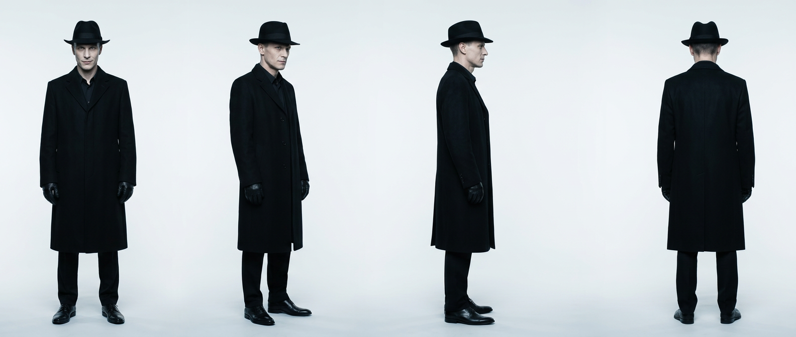
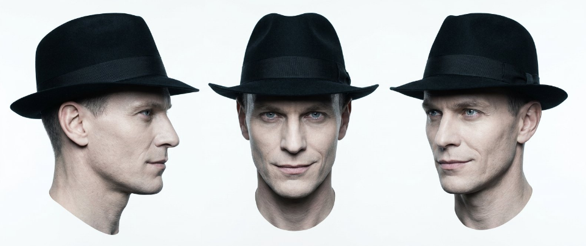
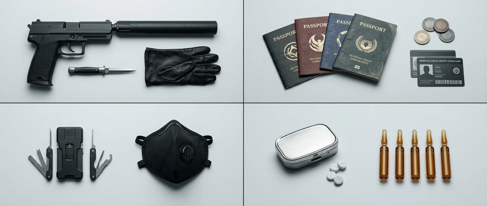
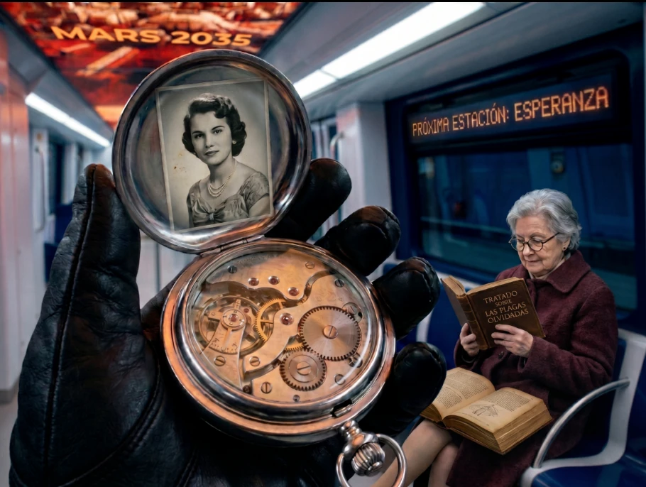
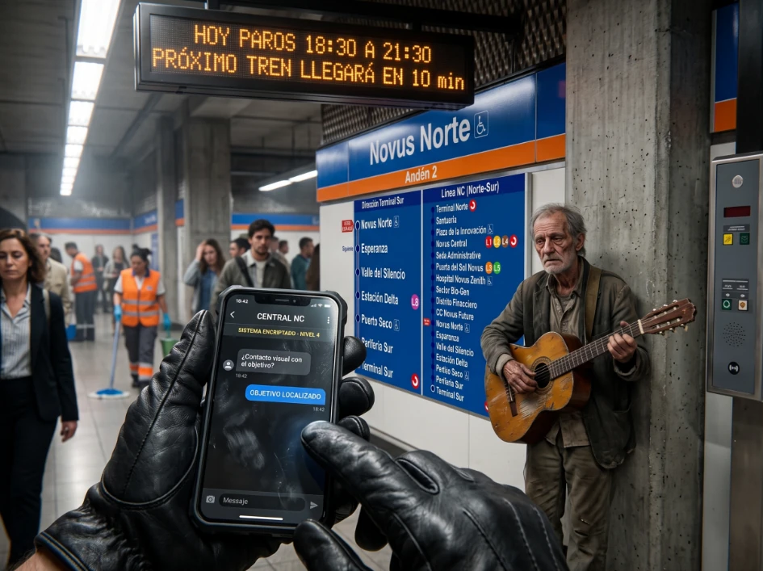

Novus Corp · Depto Arte · Confidencial
NC-PROTAC / 05 · El Resurgir
El Mercenario
Limpieza quirúrgica. La limpieza es su marca.

MERCENARIO_01_TURNAROUND.png Turnaround · fedora · gabardina Obsidian · 0° / 45° / 90° / 180°
{kind=link}

MERCENARIO_02_ROSTROS.png Perfil / frente / tres cuartos · smirk de desprecio · nunca sonrisa amistosa
{kind=link}

MERCENARIO_03_KIT.webp Kit · arma + silenciador · guante · pasaportes · ganzúas · máscara · ampollas
{kind=link}

MERCENARIO_04_BINARY_BOARDING.webp 9J · Binary Boarding · obreros izq · él solo der · Línea NC #00008B

MERCENARIO_05_MEMENTO_MORI.webp Memento Mori · foto 1940–50 · engranajes · PRÓXIMA ESTACIÓN: ESPERANZA
{kind=link}

MERCENARIO_06_OBJETIVO_LOCALIZADO.webp POV · 18:42 · OBJETIVO LOCALIZADO · Novus Norte · Vector Silencioso
{kind=link}
Matriz técnica
Identidad
Alias
El Mercenario / El Impoluto
Función
Saboteador BSL-4, ejecutor, depredador
Edad
Indeterminada — jamás se declara
Altura
186 cm
Rostro
Afilado, pómulos altos, piel fría #D8D2CC
Ojos
Gris-azul, smirk de desprecio
Look bloqueado
Fedora
Fieltro Obsidian #0B0B0B
Gabardina
Larga, impecable, Obsidian
Guantes
Cuero negro prístino
Calzado
Oxford pulido Obsidian
Teléfono
18:42 · OBJETIVO LOCALIZADO
Bloqueos (leyes)
- Nunca sonrisa amistosa.
- Edad jamás se declara ni se fija visualmente.
- Binary Boarding: obreros a la izquierda; él solo a la derecha.
- Teléfono: hora bloqueada 18:42; mensaje exacto OBJETIVO LOCALIZADO.
- BSL-4, nunca SBL-4.
Paleta bloqueada
#0B0B0B
Obsidian — look
Obsidian — look
#D8D2CC
Piel fría
Piel fría
#2A3239
Gunmetal
Gunmetal
#C0C0C0
Acero
Acero
#00008B
Línea NC
Línea NC
Lock de personaje · pegar en prompt
A tall lean man 186cm, age indeterminate, sharp angular features, high cheekbones, cold pale skin #D8D2CC, grey-blue predatory eyes, contained smirk of contempt — never a friendly smile. Obsidian #0B0B0B fedora, long impeccable trench coat, pristine black leather gloves, tailored trousers, polished oxfords. Photoreal live-action.
Negative: friendly smile, dirty assassin, recast, CGI, SBL-4.